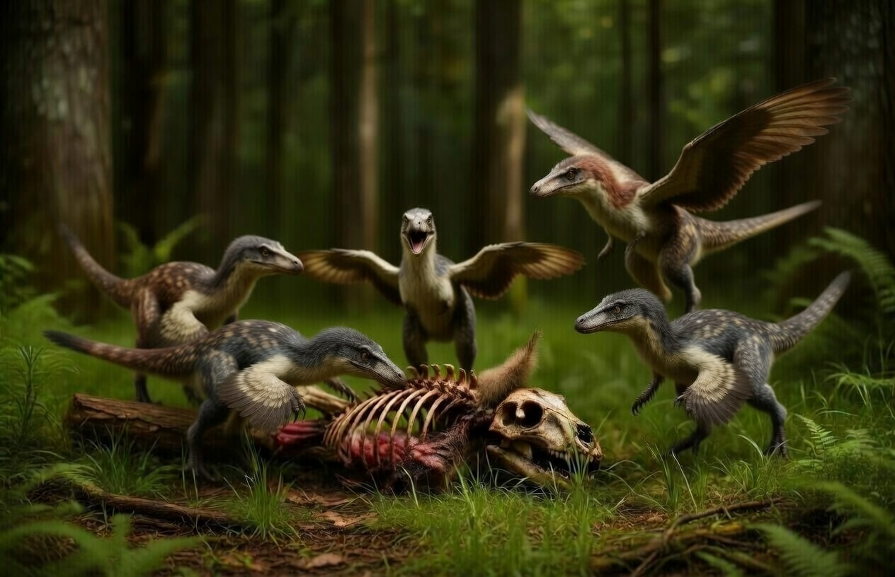
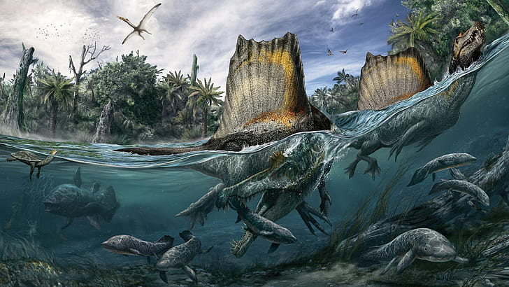
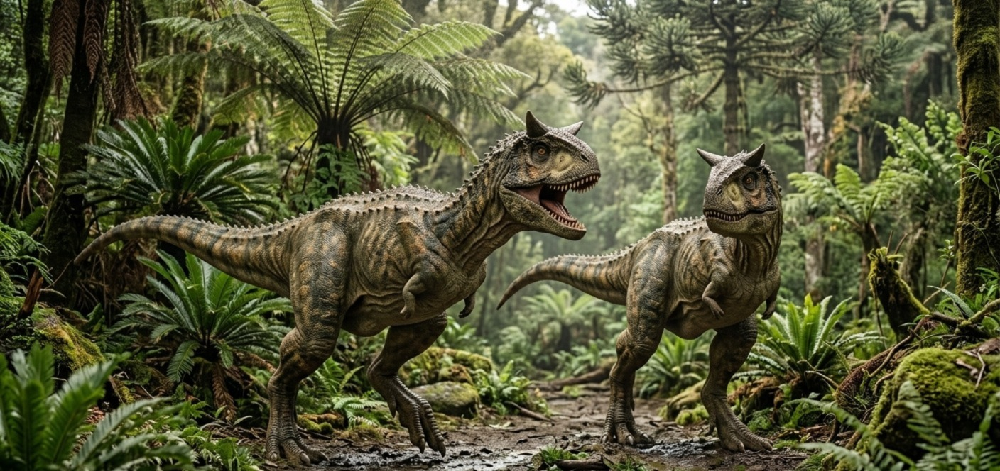
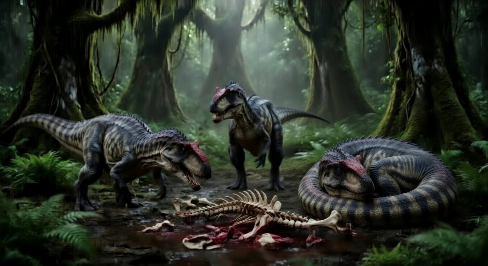
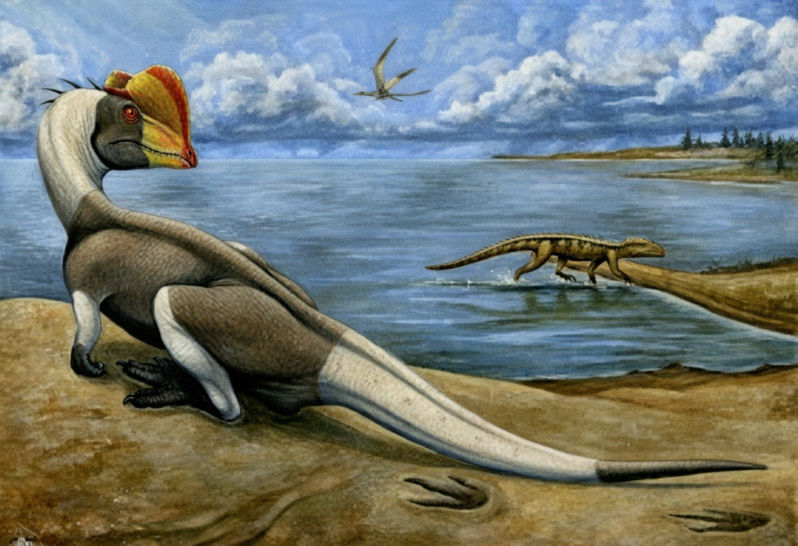
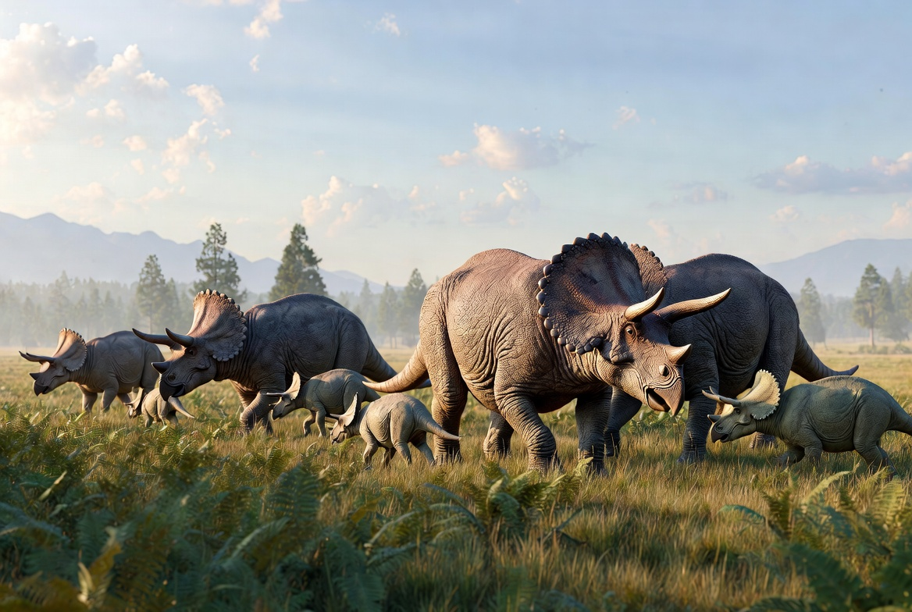
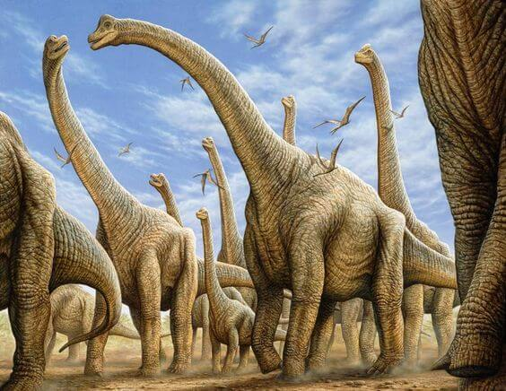

Dinossauros Famosos
Os dinossauros sempre despertaram curiosidade em pessoas de todas as idades. Alguns deles se tornaram extremamente famosos por suas características únicas, tamanho impressionante ou por aparecerem em filmes e séries. Nesta página, você vai conhecer alguns dos dinossauros mais conhecidos do mundo.
🦖 Carnívoros Mais Famosos
1. Tiranossauro Rex (T-Rex)
O T-Rex é considerado um dos predadores mais temidos que já existiram. Com dentes enormes e uma mordida extremamente poderosa, ele dominava o topo da cadeia alimentar.

| Altura | Até 6 metros |
|---|---|
| Comprimento | Até 12 metros |
| Peso | Cerca de 8 toneladas |
| Época | Cretáceo (68–66 milhões de anos atrás) |
| Local | América do Norte |
| Dieta | Carnívoro |
2. Velociraptor
Apesar de pequeno, o Velociraptor era um caçador inteligente e veloz. Ele utilizava estratégia e agilidade para capturar suas presas.

| Altura | Cerca de 0,5 metro |
|---|---|
| Comprimento | Até 2 metros |
| Peso | Cerca de 15 kg |
| Época | Cretáceo (75–71 milhões de anos atrás) |
| Local | Ásia (Mongólia) |
| Dieta | Carnívoro |
3. Espinossauro
O Espinossauro se destacava por sua enorme vela nas costas e por viver próximo da água, sendo um dos poucos dinossauros adaptados à vida aquática.

| Altura | Até 7 metros |
|---|---|
| Comprimento | Até 15 metros |
| Peso | Cerca de 7 a 10 toneladas |
| Época | Cretáceo (112–93 milhões de anos atrás) |
| Local | Norte da África |
| Dieta | Carnívoro |
4. Carnotauro
O Carnotauro era um predador rápido e ágil, conhecido pelos chifres em sua cabeça e sua habilidade de correr em alta velocidade.

| Altura | Cerca de 3 metros |
|---|---|
| Comprimento | Até 9 metros |
| Peso | Cerca de 1,5 toneladas |
| Época | Cretáceo (72–69 milhões de anos atrás) |
| Local | América do Sul (Argentina) |
| Dieta | Carnívoro |
5. Alossauro
O Alossauro foi um dos principais predadores do período Jurássico, usando suas garras afiadas e força para caçar grandes presas.

| Altura | Até 4 metros |
|---|---|
| Comprimento | Até 12 metros |
| Peso | Cerca de 2 toneladas |
| Época | Jurássico (155–145 milhões de anos atrás) |
| Local | América do Norte e Europa |
| Dieta | Carnívoro |
6. Giganotossauro
Maior que o T-Rex em comprimento, o Giganotossauro era um predador extremamente poderoso que dominava seu território.

| Altura | Cerca de 4 metros |
|---|---|
| Comprimento | Até 13 metros |
| Peso | Cerca de 8 toneladas |
| Época | Cretáceo (99–97 milhões de anos atrás) |
| Local | América do Sul (Argentina) |
| Dieta | Carnívoro |
7. Dilofossauro
O Dilofossauro é conhecido pelas duas cristas em sua cabeça. Diferente dos filmes, ele não cuspia veneno, mas era um predador eficiente.

| Altura | Cerca de 1,5 metro |
|---|---|
| Comprimento | Até 7 metros |
| Peso | Cerca de 400 kg |
| Época | Jurássico (193 milhões de anos atrás) |
| Local | América do Norte |
| Dieta | Carnívoro |
🦕 Herbívoros Mais Famosos
1. Tricerátops
O Tricerátops usava seus três chifres como defesa contra predadores, sendo um dos herbívoros mais fortes da sua época.

| Altura | Até 3 metros |
|---|---|
| Comprimento | Até 9 metros |
| Peso | Cerca de 6 a 12 toneladas |
| Época | Cretáceo (68–66 milhões de anos atrás) |
| Local | América do Norte |
| Dieta | Herbívoro |
2. Braquiossauro
Um gigante pacífico, o Braquiossauro usava seu longo pescoço para alcançar folhas no topo das árvores.

| Altura | Até 13 metros |
|---|---|
| Comprimento | Até 25 metros |
| Peso | Cerca de 30 a 60 toneladas |
| Época | Jurássico (154–153 milhões de anos atrás) |
| Local | América do Norte e África |
| Dieta | Herbívoro |
3. Estegossauro
O Estegossauro possuía placas nas costas que podiam ajudar na defesa e regulação de temperatura.

| Altura | Cerca de 4 metros |
|---|---|
| Comprimento | Até 9 metros |
| Peso | Cerca de 5 toneladas |
| Época | Jurássico (155–150 milhões de anos atrás) |
| Local | América do Norte |
| Dieta | Herbívoro |
4. Anquilossauro
Considerado um “tanque vivo”, o Anquilossauro tinha corpo blindado e uma cauda poderosa para se defender.

| Altura | Cerca de 1,7 metro |
|---|---|
| Comprimento | Até 8 metros |
| Peso | Cerca de 6 toneladas |
| Época | Cretáceo (68–66 milhões de anos atrás) |
| Local | América do Norte |
| Dieta | Herbívoro |
5. Diplodoco
O Diplodoco era um dos dinossauros mais longos, usando sua cauda como defesa contra predadores.

| Altura | Cerca de 4 metros |
|---|---|
| Comprimento | Até 27 metros |
| Peso | Cerca de 15 toneladas |
| Época | Jurássico (154–152 milhões de anos atrás) |
| Local | América do Norte |
| Dieta | Herbívoro |
6. Iguanodonte
Um dos primeiros dinossauros estudados, o Iguanodonte usava seu polegar em forma de espinho para defesa.

| Altura | Até 3 metros |
|---|---|
| Comprimento | Até 10 metros |
| Peso | Cerca de 3 a 5 toneladas |
| Época | Cretáceo (126–113 milhões de anos atrás) |
| Local | Europa |
| Dieta | Herbívoro |
7. Parassaurolofo
Conhecido por sua crista longa, que provavelmente era usada para emitir sons e comunicação.

| Altura | Até 4 metros |
|---|---|
| Comprimento | Até 10 metros |
| Peso | Cerca de 2 a 3 toneladas |
| Época | Cretáceo (76–73 milhões de anos atrás) |
| Local | América do Norte |
| Dieta | Herbívoro |